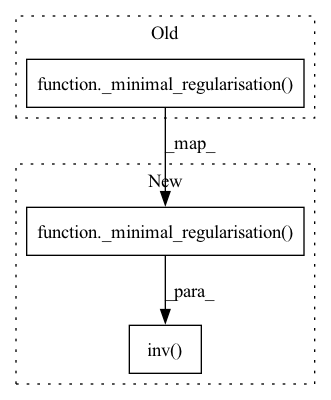

Pattern ID :24505
Before Change
C = torch.matmul(all_views.T, all_views)
// Get the block covariance matrix placing Xi^TX_i on the diagonal
D = torch.block_diag(*[_minimal_regularisation( torch.matmul(view.T, view), self.eps) for view in views])
// In MCCA our eigenvalue problem Cv = lambda Dv
After Change
C = C - torch.block_diag(*[view.T @ view for view in views]) + D
D = _minimal_regularisation( D, self.eps)
R = torch.linalg.inv( torch.linalg.cholesky(D))
// In MCCA our eigenvalue problem Cv = lambda Dv
C_whitened = R @ C @ R.T
In pattern: SUPERPATTERN
Frequency: 4
Non-data size: 3
Instances Fragment ID: 76230043
Project Name: jameschapman19/cca_zoo
Commit Name: 109657aa0c08d40d8571bc16e653094cb6206408
Time: 2021-07-14
Author: james.chapman.19@ucl.ac.uk
File Name: cca_zoo/deepmodels/objectives.py
M Class Name: MCCA
N Class Name: MCCA
M Method Name: loss(1)
N Method Name: loss(1)
M Parent Class:
N Parent Class:
M File Name: cca_zoo/deepmodels/objectives.py
N File Name: cca_zoo/deepmodels/objectives.py
M Start Line: 47
M End Line: 63
N Start Line: 48
N End Line: 66
Before Change
dtype=torch.double,
device=H2.device).float()
SigmaHat11RootInv = _compute_matrix_power(_minimal_regularisation( SigmaHat11, self.eps) , -0.5)
SigmaHat22RootInv = _compute_matrix_power(_minimal_regularisation(SigmaHat22, self.eps), -0.5)
Tval = torch.matmul(torch.matmul(SigmaHat11RootInv,After Change
dtype=torch.double,
device=H2.device).float()
SigmaHat11RootInv = torch.linalg.inv( torch.linalg.cholesky(_minimal_regularisation( SigmaHat11, self.eps) ))
SigmaHat22RootInv = torch.linalg.inv(torch.linalg.cholesky(_minimal_regularisation(SigmaHat22, self.eps)))
Tval = torch.matmul(torch.matmul(SigmaHat11RootInv,
SigmaHat12), SigmaHat22RootInv) Fragment ID: 76230042
Project Name: jameschapman19/cca_zoo
Commit Name: 4956ef5972aa19600e88d09db866799129ccbcb9
Time: 2021-07-13
Author: james.chapman.19@ucl.ac.uk
File Name: cca_zoo/deepmodels/objectives.py
M Class Name: CCA
N Class Name: CCA
M Method Name: loss(3)
N Method Name: loss(3)
M Parent Class:
N Parent Class:
M File Name: cca_zoo/deepmodels/objectives.py
N File Name: cca_zoo/deepmodels/objectives.py
M Start Line: 163
M End Line: 170
N Start Line: 164
N End Line: 171
Before Change
(1 - self.r) * (1.0 / (m - 1)) * z_.T @ z_ + self.r * torch.eye(z_.size(1), device=z_.device)
for
z_ in z]
z = [z_ @ _compute_matrix_power(_minimal_regularisation( cov, self.eps) , -0.5) for z_, cov in zip(z, covs)]
for i, el in enumerate(z):
if i == 0:After Change
(1 - self.r) * (1.0 / (m - 1)) * z_.T @ z_ + self.r * torch.eye(z_.size(1), device=z_.device)
for
z_ in z]
z = [z_ @ torch.linalg.inv( MatrixSquareRoot.apply(_minimal_regularisation( cov, self.eps) )) for z_, cov in
zip(z, covs)]
for i, el in enumerate(z): Fragment ID: 76230041
Project Name: jameschapman19/cca_zoo
Commit Name: a8ad180f51f31647d4c9c6774da5abbb4af58f0d
Time: 2021-09-03
Author: james.chapman.19@ucl.ac.uk
File Name: cca_zoo/deepmodels/objectives.py
M Class Name: TCCA
N Class Name: TCCA
M Method Name: loss(1)
N Method Name: loss(1)
M Parent Class:
N Parent Class:
M File Name: cca_zoo/deepmodels/objectives.py
N File Name: cca_zoo/deepmodels/objectives.py
M Start Line: 205
M End Line: 205
N Start Line: 232
N End Line: 232
Before Change
SigmaHat22 = (1 - self.r) * (1.0 / (n - 1)) * H2bar.T @ H2bar + self.r * torch.eye(o2, device=H2.device)
SigmaHat11RootInv = _compute_matrix_power(_minimal_regularisation(SigmaHat11, self.eps), -0.5)
SigmaHat22RootInv = _compute_matrix_power(_minimal_regularisation( SigmaHat22, self.eps) , -0.5)
Tval = SigmaHat11RootInv @ SigmaHat12 @ SigmaHat22RootInv
trace_TT = Tval.T @ TvalAfter Change
SigmaHat22 = (1 - self.r) * (1.0 / (n - 1)) * H2bar.T @ H2bar + self.r * torch.eye(o2, device=H2.device)
SigmaHat11RootInv = torch.linalg.inv(MatrixSquareRoot.apply(_minimal_regularisation(SigmaHat11, self.eps)))
SigmaHat22RootInv = torch.linalg.inv( MatrixSquareRoot.apply(_minimal_regularisation( SigmaHat22, self.eps) ))
Tval = SigmaHat11RootInv @ SigmaHat12 @ SigmaHat22RootInv
trace_TT = Tval.T @ Tval
eigvals = torch.linalg.eigvalsh(trace_TT) Fragment ID: 76230044
Project Name: jameschapman19/cca_zoo
Commit Name: a8ad180f51f31647d4c9c6774da5abbb4af58f0d
Time: 2021-09-03
Author: james.chapman.19@ucl.ac.uk
File Name: cca_zoo/deepmodels/objectives.py
M Class Name: CCA
N Class Name: CCA
M Method Name: loss(3)
N Method Name: loss(3)
M Parent Class:
N Parent Class:
M File Name: cca_zoo/deepmodels/objectives.py
N File Name: cca_zoo/deepmodels/objectives.py
M Start Line: 165
M End Line: 166
N Start Line: 192
N End Line: 193